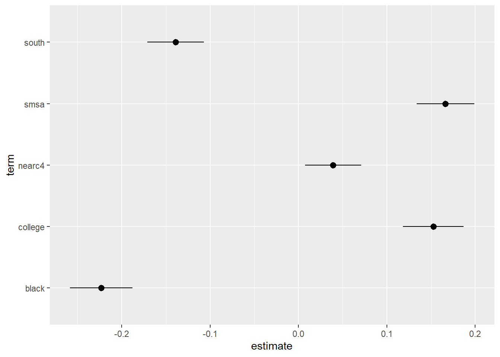

Chapter 6 Constant parameterの推定
（条件付き）平均差を推定する。
点推定だけでなく、信頼区間も推定する。
6.1 データ
library(tidyverse)
data("close_college",
package = "causaldata")
raw <- na.omit(close_college)
raw <- mutate(raw,
college = if_else(educ >= 16, 1, 0))
set.seed(111)6.2 部分線形モデルに基づく推定
- 部分線形モデルに関心のあるパラメータを埋め込む
\[E[Y|D=d,X=x]=\underbrace{\tau}_{Interest\ parameter}\times d+\underbrace{f(x)}_{Nuisance\ function}\]
6.2.1 OLS by lm_robust (estimatr)
\(\tau(x)=\tau,f(x)=\beta_0+\beta_1x_1+...+\beta_Lx_L\)と特定化
サンプル内MSEを最大化するように推定
robust standard errorを計算するためにestimatrパッケージ(Blair et al. 2021)を利用
library(estimatr)- lm_robust関数で推定
lm_robust(lwage ~ college + nearc4 + black,
data = raw)## Estimate Std. Error t value Pr(>|t|) CI Lower
## (Intercept) 6.1952536 0.01454122 426.047636 0.000000e+00 6.16674178
## college 0.1695215 0.01767448 9.591315 1.762574e-21 0.13486616
## nearc4 0.1240253 0.01582735 7.836142 6.399135e-15 0.09299177
## black -0.2744157 0.01771864 -15.487400 4.169409e-52 -0.30915760
## CI Upper DF
## (Intercept) 6.2237653 2999
## college 0.2041768 2999
## nearc4 0.1550589 2999
## black -0.2396738 2999発展:推計結果表
tidy関数により推定結果data.frameに変化することで、kable関数(knitrパッケージ)による推計結果表の整形、geom_pointrange関数による可視化が可能
点推定値(estimate)、標準誤差(std.error)のみを残した推計結果表
library(knitr)
library(tidyverse)
fit <-
lm_robust(lwage ~ college + nearc4 + black,
data = raw)
fit <- tidy(fit)
fit <- select(fit, term, estimate, std.error)
kable(fit, digits = 2)| term | estimate | std.error |
|---|---|---|
| (Intercept) | 6.20 | 0.01 |
| college | 0.17 | 0.02 |
| nearc4 | 0.12 | 0.02 |
| black | -0.27 | 0.02 |
fit <- filter(fit,
term == "college")
kable(fit, digits = 2)| term | estimate | std.error |
|---|---|---|
| college | 0.17 | 0.02 |
発展:Dot-and-Whisker plotによる可視化
- Dot-and-Whisker図により点推定量と信頼区間を可視化
fit <-
lm_robust(lwage ~ college + nearc4 + black,
data = raw)
fit <- tidy(fit)
fit <- filter(fit,
term != "(Intercept)")
ggplot(fit, aes(y = term,
x = estimate,
xmin = conf.low,
xmax = conf.high)) +
geom_pointrange()
fit <- filter(fit,
term == "college")
ggplot(fit, aes(y = term,
x = estimate,
xmin = conf.low,
xmax = conf.high)) +
geom_pointrange() +
geom_vline(xintercept = 0)
6.2.2 ロビンソン変換
- 部分線形モデルをロビンソン変換(Robinson 1988)
\[Y_i-\underbrace{E[Y_i|X_i]}_{Nuisance\ term}=\tau\times [D_i-\underbrace{E[D_i|X_i]}_{Nuisance\ term}]+u_i\]
\(E[Y_i|X_i],E[D_i|X_i]\)を予測関数として推定し、予測誤差間を単回帰すればよい
実際には\(E[Y_i|X_i],E[D_i|X_i]\)は未知の関数なので何らかの方法で推定する必要がある。関数の推定なので予測の手法が適用できる。
6.2.2.1 Double selection: rlassoEffect (hdm)
2重選択法(Belloni, Chernozhukov, and Hansen 2014)を紹介
LASSOにより\(Y_i,D_i\)の両方あるいはどちらか一方を予測する上でrelevantな\(X^c\)を特定しコントロールする
- \(Y_i,D_i\)どちらの予測にもrelevantではない変数は除外する
hdmパッケージ(Spindler, Chernozhukov, and Hansen 2019)を利用
library(hdm)
Y <- raw$lwage
D <- raw$college
X <- model.matrix(~ - 1+ black + nearc4 + black:nearc4,
raw)
fit <-
rlassoEffect(x = X,
y = Y,
d = D,
method = "double selection")- 推定結果
summary(fit)## [1] "Estimates and significance testing of the effect of target variables"
## Estimate. Std. Error t value Pr(>|t|)
## d1 0.16952 0.01767 9.594 <2e-16 ***
## ---
## Signif. codes: 0 '***' 0.001 '**' 0.01 '*' 0.05 '.' 0.1 ' ' 1- 選択されたコントロール変数
fit$selection.index## black nearc4 black:nearc4
## TRUE TRUE FALSE6.2.2.2 Double Machine Learning (DoubleML)
Double Machine Learning法(Chernozhukov et al. 2018)を紹介
なんらかの方法（例、OLS、ランダムフォレスト、LASSO）で\(E[Y|X],E[D|X]\)の予測関数\(f_Y(X),f_D(X)\)を推定し、予測誤差を単回帰
DoubleMLパッケージ(Bach et al. 2021)を利用
library(DoubleML)
library(mlr3)
library(mlr3learners)
library(data.table)
learner <-
lrn("regr.ranger",
num.trees = 100) # Require bigger num.trees in practice
ml_g <- learner$clone()
ml_m <- learner$clone()
obj_dml_data <-
double_ml_data_from_matrix(X = X,
y = as.numeric(Y),
d = as.numeric(D))
dml_plr_obj <-
DoubleMLPLR$new(obj_dml_data,
ml_g,
ml_m,
dml_procedure="dml1",
n_rep = 3)
dml_plr_obj$fit()## INFO [18:23:46.435] [mlr3] Applying learner 'regr.ranger' on task 'nuis_g' (iter 1/5)
## INFO [18:23:46.542] [mlr3] Applying learner 'regr.ranger' on task 'nuis_g' (iter 5/5)
## INFO [18:23:46.611] [mlr3] Applying learner 'regr.ranger' on task 'nuis_g' (iter 3/5)
## INFO [18:23:46.658] [mlr3] Applying learner 'regr.ranger' on task 'nuis_g' (iter 4/5)
## INFO [18:23:46.704] [mlr3] Applying learner 'regr.ranger' on task 'nuis_g' (iter 2/5)
## INFO [18:23:46.996] [mlr3] Applying learner 'regr.ranger' on task 'nuis_m' (iter 3/5)
## INFO [18:23:47.044] [mlr3] Applying learner 'regr.ranger' on task 'nuis_m' (iter 5/5)
## INFO [18:23:47.090] [mlr3] Applying learner 'regr.ranger' on task 'nuis_m' (iter 2/5)
## INFO [18:23:47.136] [mlr3] Applying learner 'regr.ranger' on task 'nuis_m' (iter 4/5)
## INFO [18:23:47.181] [mlr3] Applying learner 'regr.ranger' on task 'nuis_m' (iter 1/5)
## INFO [18:23:47.343] [mlr3] Applying learner 'regr.ranger' on task 'nuis_g' (iter 4/5)
## INFO [18:23:47.386] [mlr3] Applying learner 'regr.ranger' on task 'nuis_g' (iter 1/5)
## INFO [18:23:47.428] [mlr3] Applying learner 'regr.ranger' on task 'nuis_g' (iter 3/5)
## INFO [18:23:47.469] [mlr3] Applying learner 'regr.ranger' on task 'nuis_g' (iter 2/5)
## INFO [18:23:47.509] [mlr3] Applying learner 'regr.ranger' on task 'nuis_g' (iter 5/5)
## INFO [18:23:47.622] [mlr3] Applying learner 'regr.ranger' on task 'nuis_m' (iter 4/5)
## INFO [18:23:47.659] [mlr3] Applying learner 'regr.ranger' on task 'nuis_m' (iter 1/5)
## INFO [18:23:47.698] [mlr3] Applying learner 'regr.ranger' on task 'nuis_m' (iter 3/5)
## INFO [18:23:47.739] [mlr3] Applying learner 'regr.ranger' on task 'nuis_m' (iter 2/5)
## INFO [18:23:47.781] [mlr3] Applying learner 'regr.ranger' on task 'nuis_m' (iter 5/5)
## INFO [18:23:47.934] [mlr3] Applying learner 'regr.ranger' on task 'nuis_g' (iter 2/5)
## INFO [18:23:47.979] [mlr3] Applying learner 'regr.ranger' on task 'nuis_g' (iter 4/5)
## INFO [18:23:48.029] [mlr3] Applying learner 'regr.ranger' on task 'nuis_g' (iter 5/5)
## INFO [18:23:48.071] [mlr3] Applying learner 'regr.ranger' on task 'nuis_g' (iter 1/5)
## INFO [18:23:48.115] [mlr3] Applying learner 'regr.ranger' on task 'nuis_g' (iter 3/5)
## INFO [18:23:48.235] [mlr3] Applying learner 'regr.ranger' on task 'nuis_m' (iter 5/5)
## INFO [18:23:48.279] [mlr3] Applying learner 'regr.ranger' on task 'nuis_m' (iter 1/5)
## INFO [18:23:48.325] [mlr3] Applying learner 'regr.ranger' on task 'nuis_m' (iter 4/5)
## INFO [18:23:48.366] [mlr3] Applying learner 'regr.ranger' on task 'nuis_m' (iter 2/5)
## INFO [18:23:48.405] [mlr3] Applying learner 'regr.ranger' on task 'nuis_m' (iter 3/5)print(dml_plr_obj)## ================= DoubleMLPLR Object ==================
##
##
## ------------------ Data summary ------------------
## Outcome variable: y
## Treatment variable(s): d
## Covariates: X1, X2, X3
## Instrument(s):
## No. Observations: 3003
##
## ------------------ Score & algorithm ------------------
## Score function: partialling out
## DML algorithm: dml1
##
## ------------------ Machine learner ------------------
## ml_g: regr.ranger
## ml_m: regr.ranger
##
## ------------------ Resampling ------------------
## No. folds: 5
## No. repeated sample splits: 3
## Apply cross-fitting: TRUE
##
## ------------------ Fit summary ------------------
## [1] "Estimates and significance testing of the effect of target variables"
## Estimate. Std. Error t value Pr(>|t|)
## d 0.17364 0.01769 9.817 <2e-16 ***
## ---
## Signif. codes: 0 '***' 0.001 '**' 0.01 '*' 0.05 '.' 0.1 ' ' 1